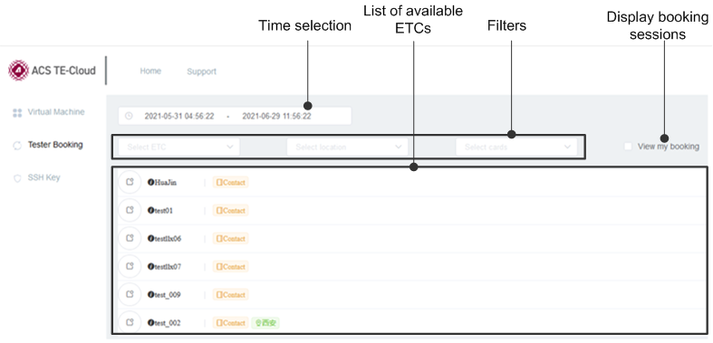

Tester Booking page
This page shows the information of engineering test centers integrated with TE-Cloud and lets you reserve the online testers for a specific time.

- Time selection
- Selecting the start time and end time shows the ETCs (engineering test centers) that have not been booked within the selected time range.
- Filters
- Selecting the ETC name, location of the ETC, and the desired card filters the ETCs displayed in the ETC list.
- Display booking sessions
- Checking this option shows the testers you have booked.
- List of available ETCs
- This list shows all ETCs integrated with TE-Cloud. If you have specified a time or set
filters, only matching testers are shown.
For each ETC, you can click the information icon
 to show the profile of the ETC and the cards available in this ETC. You can also
click the tester booking icon
to show the profile of the ETC and the cards available in this ETC. You can also
click the tester booking icon  to book the tester for a specific time slot.
to book the tester for a specific time slot.
Functional changes
- Introduced in SmarTest 7.6.2